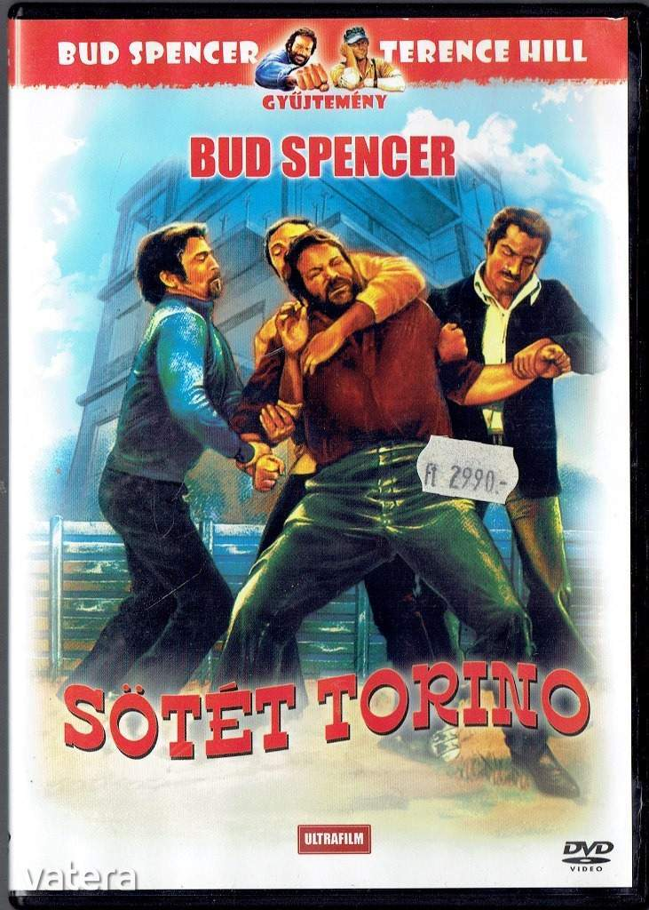

| Dal a bordélyházból (2003) | Atyai pofonosztó (2001) | A szél fiai (Az aztékok bukása) (1999) | Hárman az örökkévalóságnak (1997) | Fuochi d'artificio (1997) |
 |
||||
| A végső határ (1997) | Bunyó karácsonyig (1994) | Fél lábbal a Paradicsomban (1990) | Aladdin (1986) | Szuperhekusok (1985) |
| Nincs kettó négy nélkül (1984) | Nyomás utána (1983) | Rabló pandúr (1982) | Bombajó bokszoló (1982) | Banános Joe (1982) |
| Aranyeső Yuccában (1981) | Kincs ami nincs (1981) | A serif és az idegenek (1980) | Piedone Egyiptomban () | Serif az égből (1979) |
| Én a vízilovakkal vagyok (1979) | Akit bulldózernek hívtak (1978) | Piedone Afrikában (1978) | És megint dűhbe jövünk (1978) | Charleston (1977) |
 |
||||
| Bűnvadászok (1977) | A zsoldoskatona (1975) | Piedone Hong Kongban (1974) | Morcos Misszionáriusok (1974) | Különben dűhbe jövünk (1974) |
|  |  |
|||
| Piedone a zsaru (1973) | Az angyalok is esznek babot (1972) | Élet vagy halál (1972) | Sötét Torino (1972) | Mindent bele, fiúk! (1972) |
| Vadnyugati Cadanova (1971) | 4 légy a szürke bársonyon (1971) | Az ördög bal és jobb keze 2 (1971) | A kalózok háboruja (1971) | Az ördög bal és jobb keze (1970) |
 |
 |
|||
| Vesztesek és győztesek (1969) | Ötszemélyes hadsereg (1969) | Akik a csizmában halnak meg (1969) | Bosszú El Pasóban (1968) | Az utolsó számlát te fizeted (1967) |
| Ezer pofon ajándékba (1967) | Nincs bocsánat (1967) | Hannibál (1959) | Búcsú a fegyverektől (1957) | Il Cocco de Mamma (1957) |
 |
 |
|||
| Napjaink hőse (1955) | Siluri umani (1954) | Quo Vadis (1951) | Quel fantasma di mio marito (1949) |
Forrás: Bud Spencer Offical Website